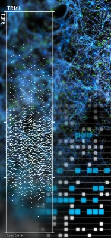

Our approaches to understanding brain function can be divided in two broad categories:
Using the above strategies we have developed over the last decades a fairly good understanding of neuron, synapse, and network mechanisms. However, we haven't yet been able to transcend from mechanisms to network function, that is we still lack the ability to identify the function(s) performed by a particular brain structure on the network level. This makes one wonder if these approaches are indeed suitable to understand brain function. In 1986 Hopfield and Tank argued that it is not sufficient to know all details of neurons and their connectivity to extract the function of a neural network. With growing computer power and advancement of experimental methods that allow for increasing high-density sampling of neural activity, it seems that Hopfield's and Tank's message has been lost.
To this end, we provide a web interface to our neural network simulator NEST, which can be used to perform a wide variety of experiments on small neural networks with spiking neurons, in which we have implemented a particular function. To help the user, we provide all relevant information about neural properties and the connectivity matrix. We also ask the user to implement a given function - biological, mathematical, etc. - using a finite number of neurons and synapses.

We do not claim that the brain works like computer of any architecture to solve the kind of functions we have implemented here with spiking neural networks. Clearly, brains have evolved to solve problems related to the survival of the animal in a hostile environment. We assume that the solutions to these problems are incorporated in the various networks in the brain in the form of basic computing principles or functions (of unknown nature). As neuroscientists, using the approaches described above, we are trying to extract those hidden functions. But are our tools and methods suitable for the tasks at hand?